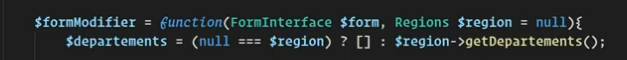
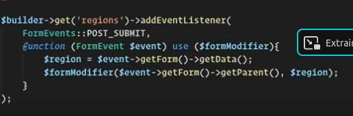
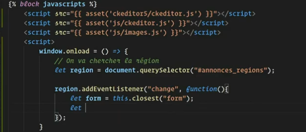
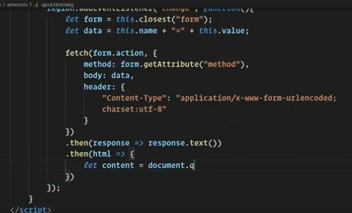

Ajax dans Les formulaires
On peut ajouter du javascript sur les formulaires avec l'ecouteur d'évènement addEventListener
Associer le formulaire à un eventListener pour avoir du dynamisme dans le formulaire
On creer la function callback formModifier
- On declare le formModifier qui est la fonction callback qui permet . Avec en parameter:
- FormInterface qui permet d'aller chercher les méthodes de formulaire ('add' par exemple)
- les regions le parametere que l'on veut utiliser en l'initialisant à null
$formModifier = function(FormInterface $form, Regions $region = null){
Si on veut ajouter les départemens associés à la region on va aller les chercher en base de données.
en ternaire si les régions sont nulles alors on renvoit un tableau vide sinon on renvoit les départements associés en bdd
$departements = (null === $region) ? [] : $region-> getDepartement();

Puis on ajoute les départements au formulaire grâce à l'entityType
On cree les différentes mises en forme que l'on souhaite pour cette entite dans le formulaire
class = on choisit la class que l'on souhaite mettre en rapport
choices = le nom de la colonne qui nous interresse à récupérer
placeholder
label

Pour information : on n'est pas obligé de séparer la fonction callback du reste du developpement, si on l'intègre directement à l'intérieur du builder cela fonctionnera. Mais de cette manière le code est plus propre
On cree la fonction add Event
- ici on associe le formulaire à un eventlistener sur le select de 'region'
$builder -> get('regions')-> addEventListener($builder -> get('regions')-> addEventListener(
FormEvents c'est l'utilisation des evenement. Ici en postSubmit pour recuperer les informations et les renvoyer en fonction de ce que l'on veut filtrer
FormEvents::POST_SUBMIT,
on déclare la fonction qui sera exécutée ave le form Event qui modifiera le formulaire. On utilise une variable qui est une fonction de callback que l'on creera par la suite
function(formEvent $event) use ($formModifier) {
On recupere la region qui est tapée par le client. En utilisant les variables du formulaire
$region = $event-> getForm()-> getData();
On appelle le formModifier avec en premier parametre le formulaire dans lequel on va allaer chercher region. Region etant dans le formulaire on va donc le chercher dans le parent. En deuxieeme paramtere on va chercher la region
$formModifier($event-> getForm()-> getParent), $region)

Pour que cela fonctionne il faut ajouter du javascript
Ajouter l'appel du javascript dans la page twig ou le formulaire est appele
- window.onload permet d'attendre que le dom soit chargé avant de lancer le javascript
- avec le query selector on recupere le nom du champ de formulaire
- on ajoute un event listener sur l'element pour saisir lorsque'il y aura un changeemnt
- On recuperer le formulaire complet pour faire un envoi ajax sur les action du formulaire. Closest est une fonction qui permet d'aller chercher la balise form la plus proche de son parent

- dans le data on va ecrire les données que l'on envoi en fonction du name du select dans le formulaire + l'id de l'éléménet récupéré
- avec le fetch on envoi en ajax au formulaire et à son action
fetch(form.action,
Puis on ajoute des options au fetch
1. la methode (post ou get)
2. dans le body on envoi la data
3. on envoi le headers (content-type). Ici c'est un formulaire encodé avec le charset utf8
Cela permet de faire partir une requete en post directement pour recuperer les informations que l'on souhaite
Avec ce type de fetch on recoit directement la page (lorsque l'on verifie avec l'inspecteur (calibré sur xhr)
Puis on recupere la reponse que l'on traite en texte
Puis on fait une nouvelle promesse permettant d'avoir le html avec la nouvelle réponse

IL Y A UNE ERREUR DANS L'IMAGE : 'Headers'